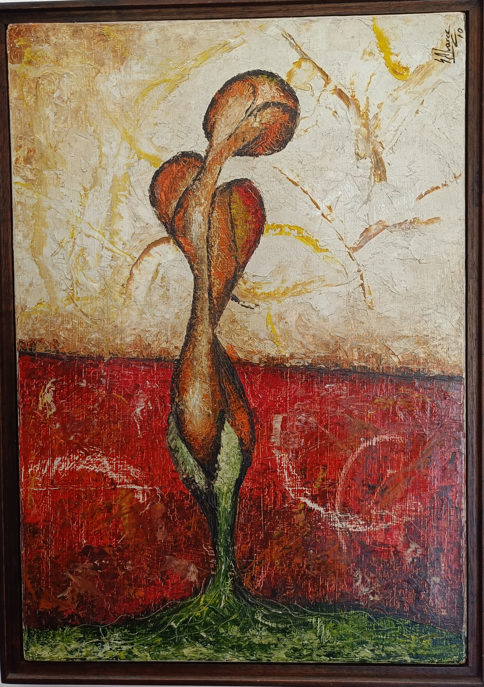

ROSA

En esta obra, la figura central domina verticalmente el encuadre y está construida con formas orgánicas de bordes suaves y textura densa, generando pregnancia visual por su simplicidad y continuidad. El contraste cromático entre los tonos cálidos de la figura (naranjas y rojos) y el fondo bicolor —una franja inferior roja texturada y una superior clara con trazos gestuales— refuerza el principio de figura-fondo. El equilibrio visual se logra mediante una simetría axial aproximada, y la continuidad ascendente de la figura guía la mirada desde la base verde hacia la parte superior, que culmina en dos formas redondeadas que se funden. El uso del color, la proporción vertical y la direccionalidad refuerzan la jerarquía visual y la unidad compositiva.
🖼 ¿Te diste cuenta…?
🌱 ¿Una planta o dos cuerpos? La forma central puede parecer una flor retorcida… pero también puede interpretarse como dos figuras humanas abrazadas. ¿Lo ves?
🌱 ¿Una planta o dos cuerpos? La forma central puede parecer una flor retorcida… pero también puede interpretarse como dos figuras humanas abrazadas. ¿Lo ves?
💃🕺 Movimiento en la quietud: La forma parece girar sobre sí misma, como si estuviera danzando. El trazo grueso y texturizado potencia esa sensación de vida.
🎨 Rojo profundo, verde vital: El contraste entre el rojo intenso del fondo y el verde en la base refuerza la dualidad entre pasión y crecimiento, entre tierra y fuego.
🖌 Textura que se siente: La técnica empastada (con mucha carga de pintura) da una sensación táctil. Podrías imaginarte cómo se siente al tocarlo.
❤ ¿Es amor? ¿Es dolor? La unión de las figuras puede transmitir ternura o fusión, pero también puede evocar pérdida o lucha. Todo depende del estado de ánimo del espectador.